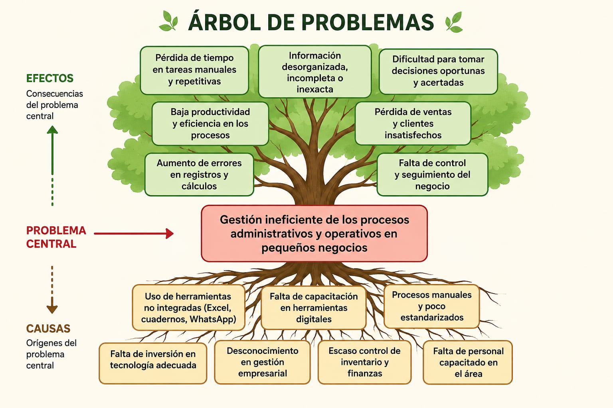

Descripción del Proyecto
Conoce el propósito y alcance de nuestra solución tecnológica
MicroERP es una solución de software web integral, ligera y modular concebida para atender las necesidades operativas reales de las micro y pequeñas empresas (PyMEs). El sistema articula en un entorno centralizado y amigable los procesos más críticos del negocio: registro ágil de ventas en punto de cobro, actualización automatizada de existencias en inventario, facturación simplificada y seguimiento detallado de clientes y proveedores, todo accesible desde cualquier navegador sin requerir infraestructura costosa ni conocimientos contables avanzados.
El propósito fundamental de este proyecto es erradicar la dependencia de libretas de papel, hojas de cálculo desarticuladas y procesos manuales que generan pérdidas monetarias y descuadres diarios. Mediante la generación automática de reportes financieros y tableros visuales de rendimiento, MicroERP empodera a los microempresarios para tomar decisiones estratégicas basadas en datos confiables, elevando su competitividad, reduciendo tiempos de atención y acelerando la transformación digital de sus comercios.
Árbol de Problema
Análisis de las causas y los efectos del problema central

Objetivos
Objetivo General
Desarrollar una aplicación web "Micro ERP" para la gestión integral de inventario, ventas y autenticación de pequeños negocios.
Objetivos Específicos
- Analizar los requerimientos funcionales y no funcionales para el desarrollo de la aplicación "Micro ERP" destinada a pequeños negocios.
- Diseñar una base de datos multi-empresa (aislada por empresa_id) y una arquitectura modular para el desarrollo de la aplicación "Micro ERP".
- Codificar los módulos núcleo de usuarios, roles, permisos, inventario y ventas conectados a un Dashboard en la aplicación "Micro ERP".
- Verificar el correcto funcionamiento y la integración entre los módulos de la aplicación "Micro ERP" mediante pruebas funcionales.
- Implementar la solución modular y documentar la aplicación "Micro ERP" para permitir su escalabilidad y continuidad en semestres futuros.
Metodología
4.1 Tipo de investigación
Paradigma: Positivista (orientado a la verificación de funcionalidad del software).
Enfoque: Mixto (cuantitativo y cualitativo).
Modalidad: Estudio de casos y enfoque descriptivo/experimental.
4.2 Cronograma y fases de desarrollo
| Fase | Actividad | Duración |
|---|---|---|
| Fase 0: Preparación | Definir stack, crear repositorio y configurar entorno de desarrollo. | 1 semana |
| Fase 1: Análisis y diseño | Requisitos, modelo de datos y diagramas. | 2 semanas |
| Fase 2: Desarrollo de módulos | Codificación de los módulos núcleo: usuarios/permisos, inventario y ventas. | 5 semanas |
| Fase 3: Integración | Dashboard, conexión entre módulos y pruebas de integración. | 2 semanas |
| Fase 4: Pruebas y entrega | Ajustes, testing y documentación final. | 2 semanas |
Tecnologías a Usar
Herramientas, lenguajes y plataformas seleccionadas para la construcción de MicroERP
- HTML5 SemánticoEstructuración accesible, estandarizada y limpia de todas las vistas del aplicativo web.
- CSS3 ModernoEstilos visuales avanzados, sistema Grid/Flexbox y diseño responsivo multiplataforma.
- JavaScript / TypeScriptLógica dinámica del lado del cliente, validaciones interactivas y consumo asíncrono de datos.
- Node.js & Express / PythonDesarrollo de servicios backend robustos y arquitectura orientada a API RESTful.
- PostgreSQL / MySQLGestor de base de datos relacional para garantizar transacciones ACID en ventas e inventario.
- Git & GitHubSistema de control de versiones distribuido para el trabajo coordinado y colaborativo del equipo.
Contacto
¿Dudas o comentarios sobre el proyecto? Escríbenos.